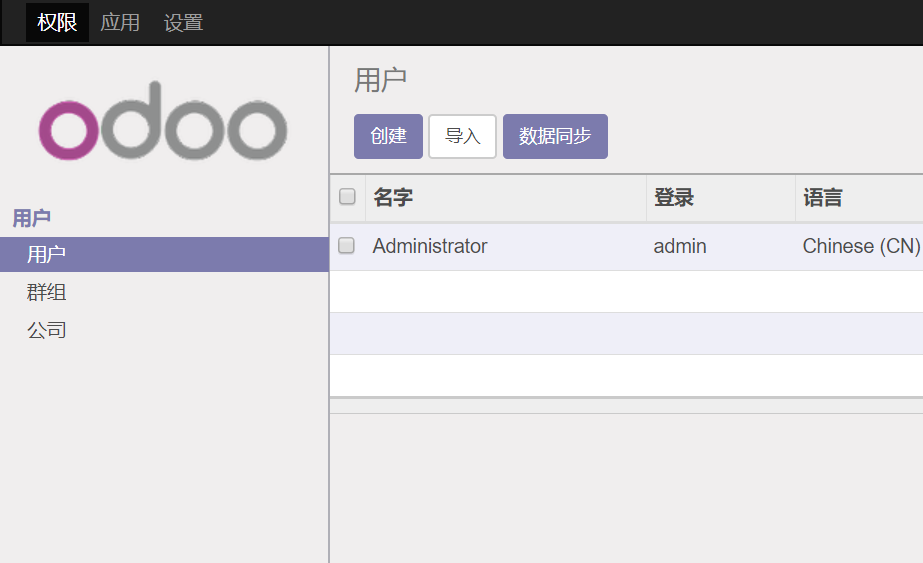
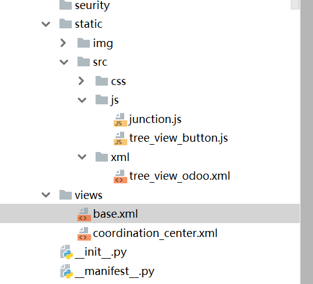

一、效果图
自定义添加顶部按钮，实现自定义方法。

二、实现过程
1、需要用到三个文件，tree_view_button.js、tree_view_odoo.xml、base.xml三个文件，文件目录如下。

2、tree_view_button.js代码如下：
1 <?xml version="1.0" encoding="UTF-8"?>
2 <template id="template_01" xml:space="preserve">
3 <!-- 拓展Tree视图增加自定义按钮 -->
4 <t t-extend="ListView.buttons">
5 <t t-jquery="div.o_list_buttons" t-operation="append">
6
7 <t t-if="widget.model == 'res.users'">
8 <button class="btn btn-primary btn-sm o_list_tender_button_create" type="button">数据同步</button>
9 </t>
10 </t>
11 </t>
12
13 <!--<!– 拓展Form视图增加自定义按钮 –>-->
14 <!--<t t-extend="FormView.buttons">-->
15 <!--<t t-jquery="button.o_form_button_create" t-operation="after">-->
16 <!--<button type="button" class="btn btn-primary o_list_tender_button_say_hello" style="display:inline-block;">Form:Say Hello</button>-->
17 <!--</t>-->
18 <!--</t>-->
19 </template>3、tree_view_button.js代码：
1 odoo.define('coordination_center.tree_view_button', function (require) {
2 "use strict";
3 var core = require('web.core');
4 var ListView = require('web.ListView');
5 var QWeb = core.qweb;
6 var Model = require('web.Model');
7 ListView.include({
8 render_buttons: function ($node) {
9 var self = this;
10 this._super($node);
11 //自定义按钮click事件绑定处理方法
12 this.$buttons.find('.o_list_tender_button_create').click(this.proxy('tree_view_action'));
13 },
14 /**
15 * 实现自定义按钮的事件
16 */
17 tree_view_action: function () {
18 console.log('点击事件！！！！');
19
20 var compose_model = new Model('tb.odoo');
21 compose_model.call('tb_odoo_tong');
22
23 console.log('点击事件结束！！！！');
24 }
25 });
26 });tb.odoo是我model名称，tb_odoo_tong是我的方法名称。
4、base.xml，引入自定义的js。
<?xml version="1.0" encoding="utf-8"?>
<odoo>
<template id="assets_backend" name="tree view menu" inherit_id="web.assets_backend">
<xpath expr="." position="inside">
<script type="text/javascript" src="/coordination_center/static/src/js/tree_view_button.js"></script>
</xpath>
</template>
</odoo>5、最后记得在__manifest__.py文件中引入xml文件。
tree_view_odoo.xml文件需要用qweb映入。
1 'qweb':[
2 'static/src/xml/tree_view_odoo.xml'
3 ]